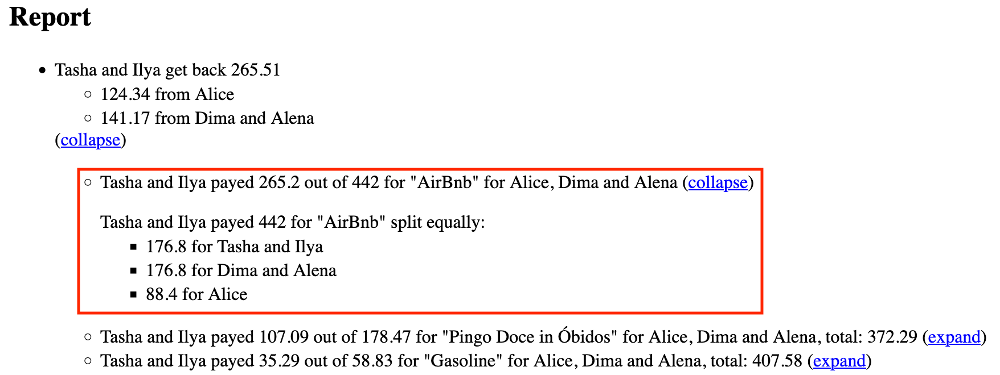
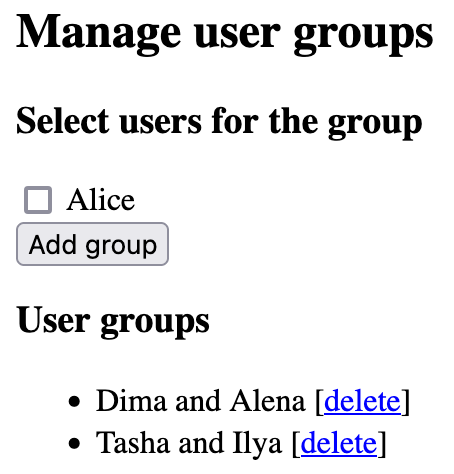
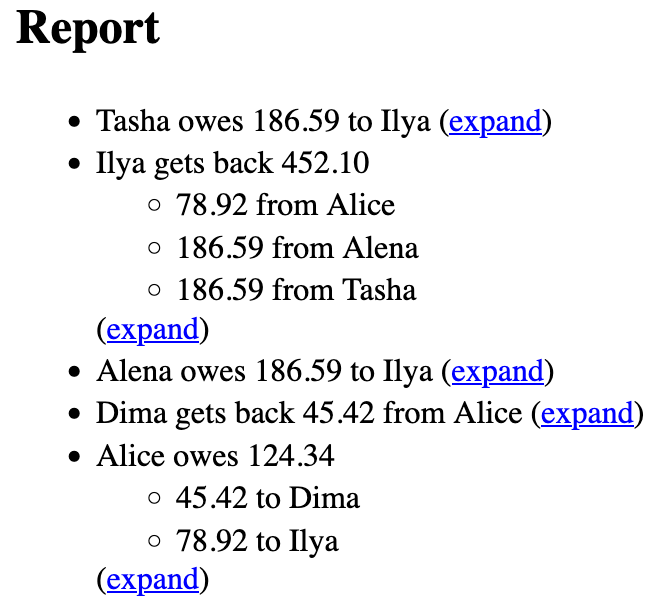
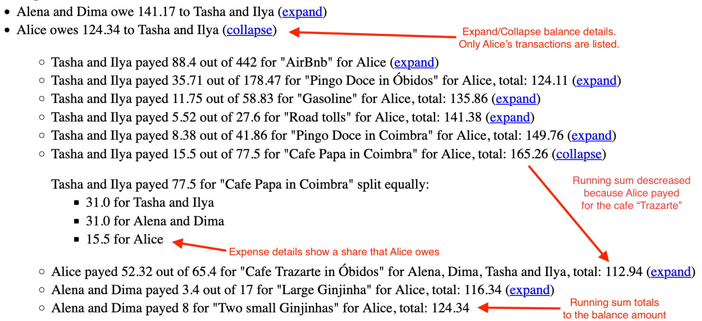

Posted on September 2, 2024
I’ve been traveling with friends recently. Traveling with a group of friends incurs shared expenses:
- Someone pays for accomodation.
- Spliting a dinner cheque becomes less convenient for a larger company.
- There may be some other shared expenses, such as fuel for a car, tolls, or museum tickets bought by one person for everybody to save time.
I wrote The Money Split Application to track shared travel expenses and I use it for myself. The application allows to record each expense and specify how to split it among people. It then reports who payed for what, and the minimum number of payment transactions necessary to settle all debts accrued among members of the party. This way, each person pays once at the end of a travel.
Splitwise and Settle Up implement the same use case, but they are lacking a couple features I want. And this application is open-sourced, will never have any ads, or annoy a user by asking to buy a premium version while the user executes a core use case.
I didn’t finish the backend yet. So, the version of the application deployed today uses browser storage. Thus, it is limited to one person entering all expenses for everyone else.
Basic usage
The simplest way of sharing an expense is “Split Equally to All”: all members of the party pay equal share of an expense.
Here is a “split equally to all” expense for an Airbnb from one our past trips:

The report shows that the expense is indeed split equally and groups of two people pay twice as much as “Alice”:

Data from the above two screenshots is pre-populated in this sample deployment. The sample page is fully functional deployment of the same application with some data available to allow the reader of this post to experiment with the application.
There are other ways to split an expense:
- “Split Equally”—to split among specific users in the workspace, not all users
- “Itemized Split”—to assign specific amounts to specific people.
I would invite the reader to explore the sample data, go through the ‘README’ on GitHub, and to play with the application itself to learn how to use it. The rest of the post is about the use cases, the existing applications, the motivation to create this project, and some other higher-level topics.
Use cases
We discussed the travel use case above: As a group of traveling friends we want a single person to pay for an expense and record all expenses, so that
- We save time at the point of sale, because paying separately requires more time.
- We make minimal number of payments between each other to settle the debts after the travel is over.
Back in 2013, I was going out for lunch with my coworkers very often. We had a consistent group of coleagues who were having meals together almost every day. We used the Splitwise application to avoid splitting the bill or paying each other. The one payed for today’s lunch who owed the most.
As a group of people doing a recurring activity together, we want the person, who owes the most, pay the next bill, so that
- We don’t split the bill, and
- We avoid transferring money to each other.
I want to use The Money Split Application application for this use case, after I implement the backend. More on that under Future plans below.
Funding a project may be another use case. Two people are working on an early prototype for a software start-up. One founder pays for hosting and context ads, another pays for video production to create a promotional clip to explain the benifits of the project to potential customers.
As start-up founders, we want to track project expenses, so that
- We spend about the same, and
- Avoid direct transfers to each other.
I listed some use cases for the application from my personal experience, but many other usage scenarios are possible as well.
Existing Applicationss
Aforementioned Splitwise and Settle Up are great applications to track shared expenses if you are willing to pay $40 and $18 per year respectively. They have Android, iOS and web versions.
But I find a couple features lacking in these two applications:
- Support for user groups, and
- Traceability of a debt balance.
Additionally, I find that free versions of the existing applications push a user to pay for a premium version way too agressively. With Splitwise being especially notorious:
- It forces a user to watch 1 minute video ad to save each transaction, and
- Limits number of transactions a user can input per day: 5 transactions in the Android app.
At the same time, The Money Split Application is open-sourced, will never have any ads, or annoy a user by asking to buy a premium version while the user executes a core use case.
Support for user groups
The Money Split Application supports user groups to simplify “split equally” expenses when certain people have joined expenses.

This was already demontrated in the Basic usage section above:
- Groups of two people pay twice as much as single users when splitting expenses equally, and
- Groups “owe” and “lend” together.
Compare the following two reports, but keep in mind that no one cares how much “Dima and Alena” and “Tasha and Ilya” owe to each other when it comes to settling debts within the party. Which one is simpler?
Without groups:

With groups:

Notice that without groups, Alice have to make two separate payments to Dima and Ilya. But if the application knows that “Dima and Alena”, and “Tasha and Ilya” have joined expeneses in the trip, then it can minimize number of transactions that Alice should do.
The reader can produce these screenshots on its own by deleting groups under “Manage user groups” in the the sample deployment.
“Split by shares” is the closest approximation to this feature in both Splitwise and Settle Up. For example in Settle Up you can create “joined users” and assign them 2 shares when splitting each transaction:

But it have to be done for each transaction. While in The Money Split Application, user groups are set up once, and then the application knows how to “split equally to all” with respect to group sizes.
Traceability of a debt balance
Another screenshot from the Settle Up application shows debts accrued from the same sample input as deployed here.

But why Alice owes 124.33 euro? One have to go to the “Transactions” tab, find all transactions where Alice participated and sum them up to figure out.
However, in The Money Split Application, the report is expandable by user and by expense. By clicking “expand” near “Alice owes 124.34 to Tasha and Ilya” entry, we get all the transactions where Alice participated, along with the running sum to show how the resulting balance have accrued.

And by clicking “expand” near the specific “Cafe Papa in Coimbra” expense, we see how exactly the expense was split and what is the Alice’s share.
Traceability of a debt balance may help to spot expense input mistakes.
Personal motivation
I experience a lot of joy when I use software that I wrote myself. But most of this software are small command line utilities and one-off scripts. For example, when I was buying a car recently, I wrote a small program that scores car ads based on price, mileage, year of production and engine power.
I want to get my pet projects to another level by enabling other people to use them. But as a backend engineer, I lack frontend experience to quickly create simple user interfaces to allow other users interact with the utilities I write.
The primary motiviation for this project was my desire to practice frontend development.
When I tried to use Splitwise after a long break, I was surprised how agressively they are trying to push a user to buy a premium version these days. And I thought: ok, that’s my opportunity to practice. I will create a free open-source version of Splitwise without ads that doesn’t stand in the way of a user, when the user executes a core use case. And I will implement the specific features that are lacking in existing splitwise-like projects.
Being a Haskell geek, my secondary motivation for the project was to understand the concept of Functional Reactive Programming (FRP) by using it. So, I implemented the project using Reflex FRP
Technical details
Implemented on client side. Can work independently. This creates additional challenges on the backend because users may work in parallel creating conflicts.
Implemented using Haskell, Reflex FRP and GHCJS. Compiles Haskell to Javascript.
Uses Closure Compiler to reduce JS size to 7.5 mb.
Future plans
Elephant in the room – implement the backend.
Workspaces / parties.
Improve UX, use Tailwind material.
May be, if there is enough users, I will add paid features like “recurrent transactions”.
Plan
Link to the app
Use cases
Existing Applications
Personal motivation
- Why I decided to write my own instead of Splitwise?
- Using own software is a joy
- Learn FRP
Technical details
- All logic is on client side
- Deployed via S3, distributed via CloudFront
- Uses Nix to import GHC from Reflex Platform
Future plans
- Work on usability
- Implement async backend
Conclusion
- It was lot of fun
- I hope people will use it